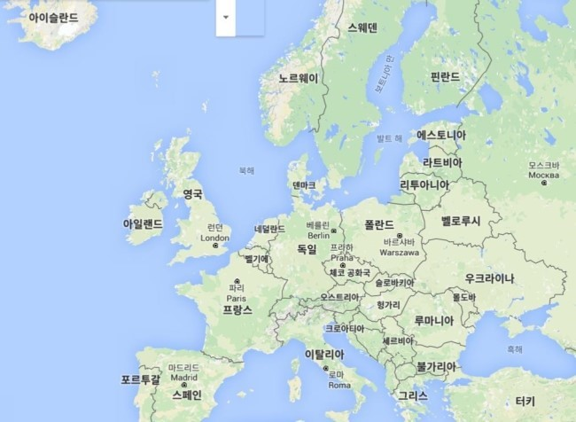
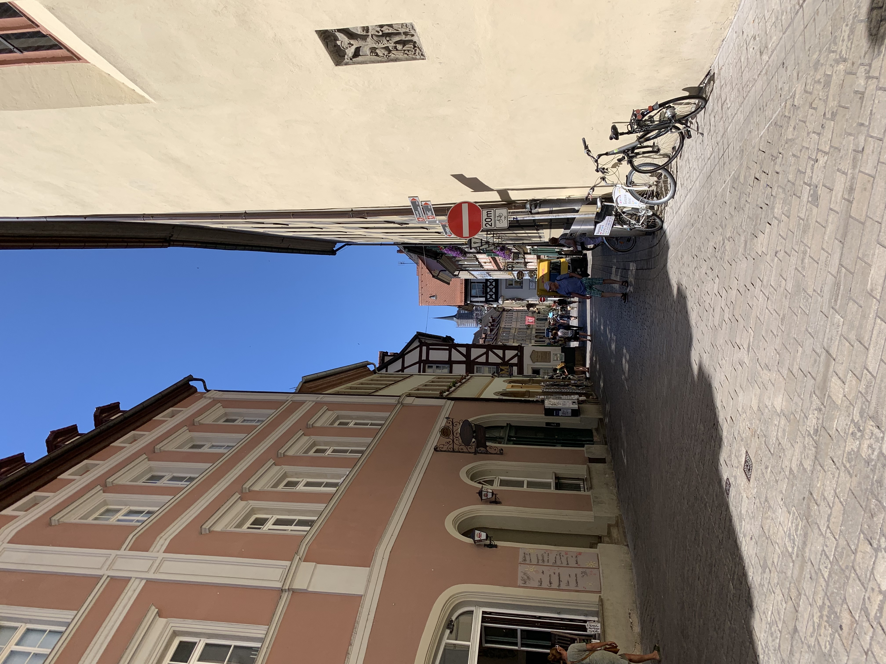

(이미지 클릭하면 더 자세히 알 수 있습니다.)
유럽을 동유럽과 서유럽으로 구분하는 기준의 시작은 역사적, 정치적 관점입니다. 하지만 전쟁이 끝나면서
지역적인 개념으로 유럽의 동, 서를 구분하는 단어로 쓰입니다.
동유럽은 산지, 평야, 평원 등의 다양한 자연경관을 자랑하는 것이 특징이고,
서유럽은 평야 지역이 넓어 1년 내내 편서풍의 영향으로 날씨가 비교적 포근한 것이 특징입니다.
유럽을 좀 더 세분화하면 북유럽과 남유럽으로도 나눌 수 있습니다.
북유럽은 지형적 특징상 산지와 해로가 많아 사시사철 아름다운 풍경이지만 교통이 불편하고,
남유럽은 지중해와 맞닿아 있는 나라가 많아 따듯한 날씨가 일 년 내도록 이어진다고 합니다.
1. 독일
제가 다녀온 곳은 독일의 프랑크푸르트와 뮌헨, 밤베르크, 퓌센입니다.
유로 국가임을 표시하는 랜드마크와 크고 작은 성들이 많은 나라입니다.
여기를 클릭하면 독일에 대한 더 많은 정보를 볼 수 있습니다.
2. 오스트리아
오스트리아의 모차르트의 고향이며 클림트의 '
키스
'라는 작품을 볼 수 있습니다.
여기를 클릭하면 오스트리아에 대한 더 많은 정보를 볼 수 있습니다.
3. 체코
체코는 중부 유럽의 문화, 예술의 중십지로서 프라하를 비롯한 많은 도시가 유네스코 세계문화유산에
등록되어 있을 정도로 아름다운 도시입니다. 다른 나라에 비해 비교적 작은 도시라 많은 굴곡의 역사가 있지만,
정체성을 잃지 않고 체코만의 문화를 꽃피웠다는 특징이 있습니다.
여기를 클릭하면 체코에 대한 더 많은 정보를 볼 수 있습니다.
 |
|
|  |
4. 폴란드
폴란드는 독일, 체코, 슬로바키아, 러시아 등 여러 나라와 국경을 접하고 있어
유럽과 CIS 지역을 연결하는 전략적 요충지입니다. 또한 우리나라와는 1989년 수교 이래로 쭉
경제적 교류를 해와서 대한민국은 '첨단, 기술'과 같은 우호적인 이미지를 가지고 있습니다.
폴란드에서 유명한건 소금광산입니다. 대규모의 소금광산으로 아직도 채굴되는 곳도 있으며,
관광지로도 몇 군데 열어두었습니다.
여기를 클릭하면 폴란드에 대한 더 많은 정보를 볼 수 있습니다.
5. 헝가리
헝가리는 야경이 유명한 도시입니다. 국회의사당이 밤에 빛나 사진 찍는 스팟으로 유명합니다.
또한 이 장소는 슬픈 공간이기도 합니다. 유대인들의 아픔을 기리기 위해 신발 동상을 놔두기도 한 장소입니다.
여기를 클릭하면 헝가리에 대한 더 많은 정보를 볼 수 있습니다.
[TOP]